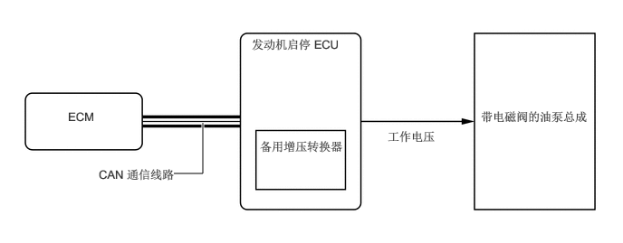

系统控制
怠速停止期间，发动机启停 ECU 将操作带电磁阀的油泵总成。这样便可确保怠速停止期间的 ATF 压力，实现车辆从发动机停止状态起步时的自然响应和平顺操纵性能。

满足下列条件时，发动机启停 ECU 向带电磁阀的油泵总成发送泵工作信号。
发动机重新起动，且发动机启停 ECU 判定发动机正在运行时将停止带电磁阀的油泵总成。此外，即使在怠速停止期间，换档杆未置于 D 时也会停止工作。
| 换档杆位置 | P | R | N | D | S |
|---|---|---|---|---|---|
|
○：工作 -：禁用怠速停止 |
|||||
| 制动器运行（施加） | - | - | - | ○ | - |
| 制动器停止（未施加） | - | - | - | - | - |
| 项目 | 条件 | 备注 |
|---|---|---|
| ATF 温度 | 25°C 至 111°C（77°F 至 231.8°F） | 通过 AT 内的 ATF 温度传感器检测 |